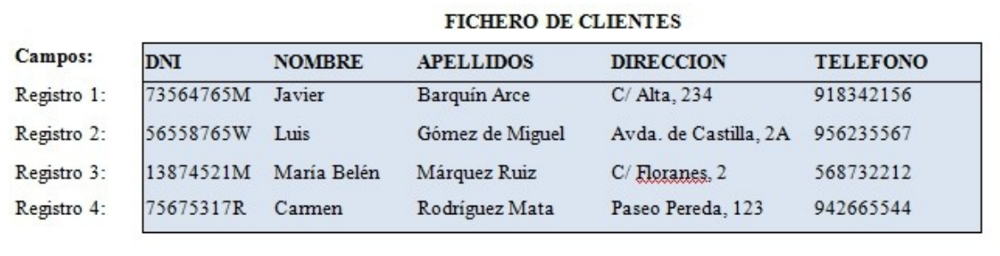
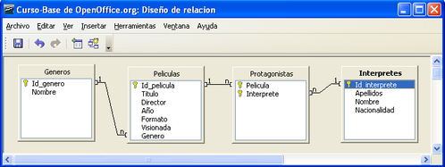
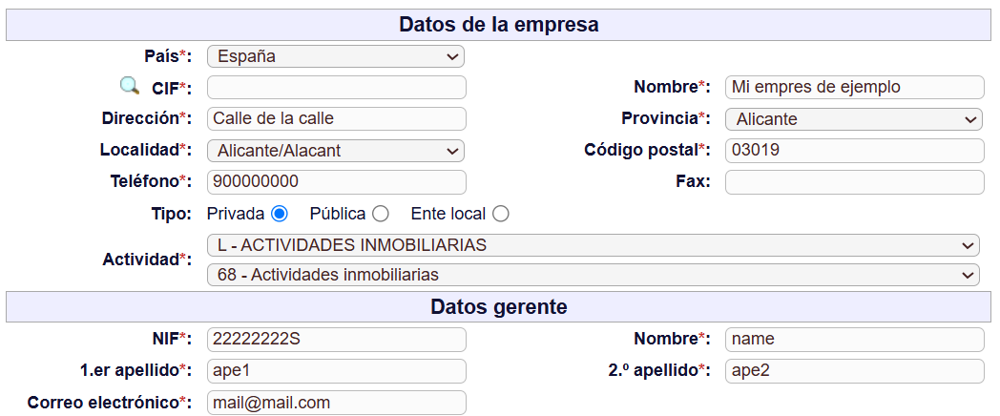
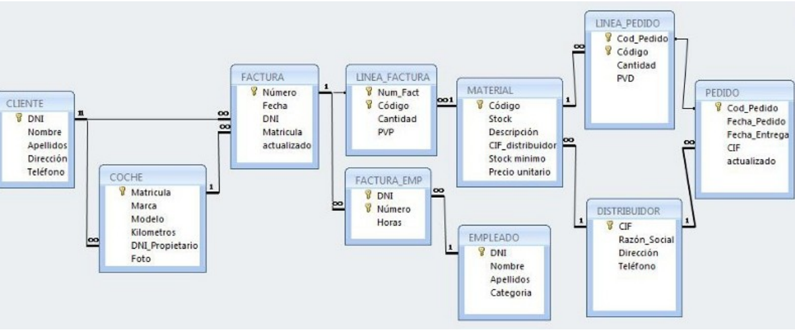
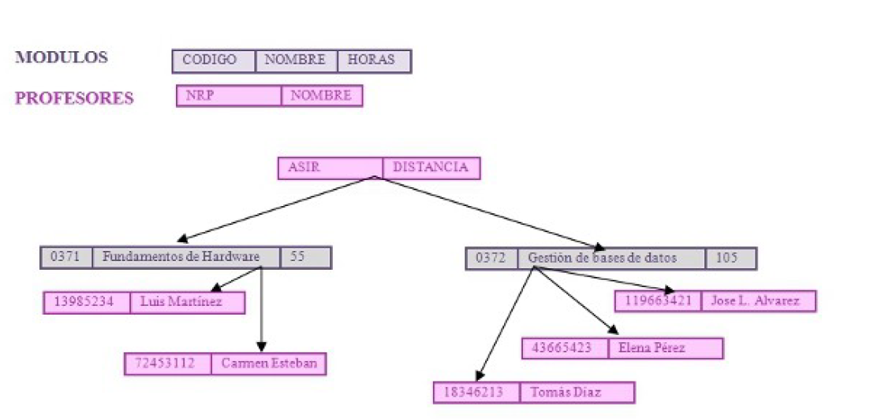
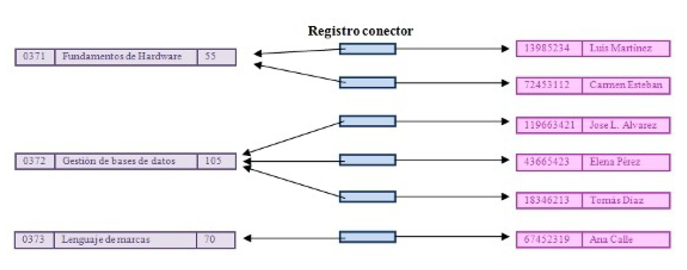
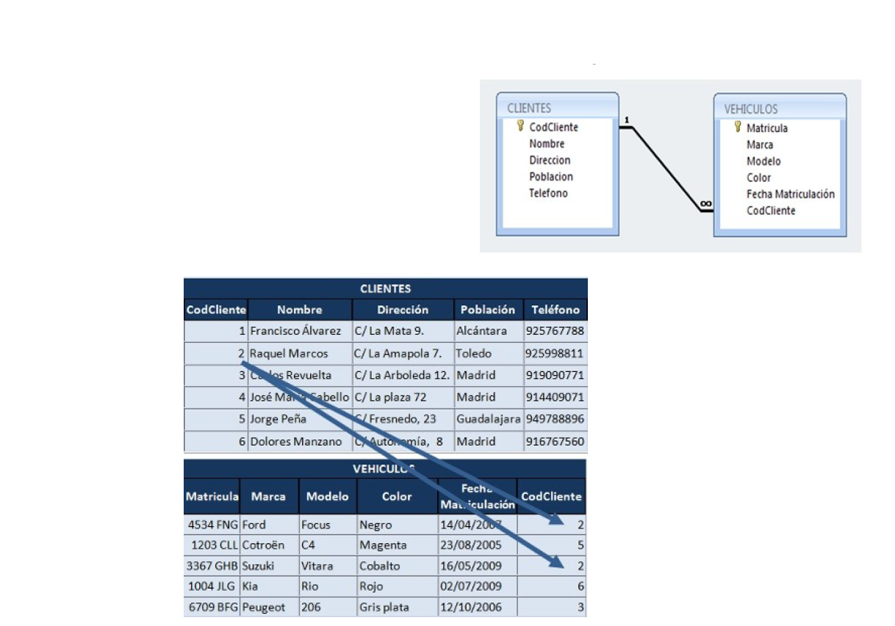
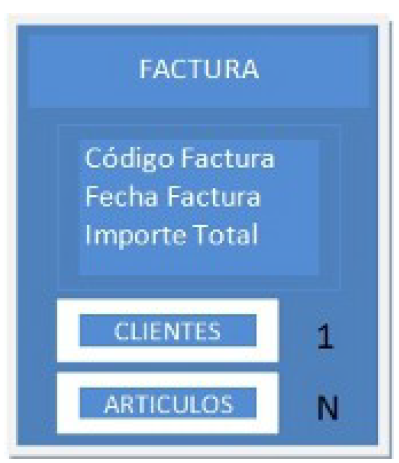

UD1. Sistemas de almacenamiento de la información
Índice
Sistemas lógicos de almacenamiento
En cualquier actividad económica es necesario tomar decisiones.
Para tomar decisiones acertadas se requiere manejar una buena información que se obtendrá a partir de los datos. Entendemos los datos como hechos aislados. Cuando los datos se organizan y se tratan se obtiene información.
Los datos son caracteres o símbolos almacenados por un computador, de los que se deriva información después de su procesamiento.
La información es fruto de un análisis inteligente de los datos recabados en un determinado momento.
Para manejar los datos con eficacia utilizaremos una base de datos, que nos ayudará a almacenar y procesar esos datos, extraer la información necesaria y tomar decisiones.
Para conseguir información valiosa es necesario que se den al menos dos premisas:
- Establecer una estructura coherente y bien diseñada donde almacenar los datos.
- Realizar las preguntas adecuadas recurriendo al análisis de los mismos para que arrojen los resultados que deseamos estudiar.
Los programas o aplicaciones son colecciones de instrucciones que manipulan datos para obtener información.
Las bases de datos han evolucionado a partir de los sistemas de archivos que presentaban una serie de problemas y limitaciones que actualmente han sido superados.
Una base de datos (BD, en inglés Database DB) es un conjunto estructurado de datos que representa entidades y sus interrelaciones.
Dentro de las bases de datos existen distintos modelos con sus ventajas e inconvenientes. Actualmente el modelo más extendido sigue siendo el modelo relacional.
A la hora de organizar la información pueden surgir posibles problemas:
- Redundancia: es la cantidad de datos repetidos en la información guardada. El objetivo es reducir todo lo posible la redundancia: con ello conseguimos dos cosas, que la información ocupe menos espacio y que sea lo más coherente posible.
- Inconsistencia de los datos: se produce cuando un dato redundante es diferente en dos o más sitios. Es el gran problema de la redundancia.
- Seguridad: Sólo determinadas personas deben poder acceder a algunas informaciones: datos personales, historial médico, historial policial, etc...
Evolución de los sistemas de almacenamiento de la información
Fichero manual
Tradicionalmente, las personas que se encargaban de guardar y hacer un seguimiento de la información, lo hacían mediante un sistema de ficheros manual, que se componía de un conjunto de carpetas etiquetadas cuyo contenido estaba relacionado y se guardaban en un armario o archivo.
Este sistema podía ser útil cuando el volumen de datos manejado no era muy grande y se podía extraer la información que se necesitaba con cierta facilidad, pero a medida que el archivo manual aumentaba y que la información que se necesitaba era más compleja fue necesario sustituir este sistema por otro informatizado.
Por ejemplo,
- en una consulta médica se guardaban en carpetas las historias clínicas de los pacientes.
- en una empresa se guardaban en carpetas las facturas y albaranes tanto de clientes como de proveedores.
Sistemas de ficheros
Las primeras aplicaciones que manejaban los datos utilizando el ordenador se concentraban en tareas propias de oficina como gestión de entradas y salidas de pedidos, nóminas, facturación, etc.
Los datos necesarios se guardaban en ficheros en el ordenador y estas aplicaciones accedían a ellos para obtener los informes que se solicitaban de cara a la toma de decisiones en la empresa.
Teníamos por una parte los ficheros necesarios para contener los datos con una estructura determinada y por otro los programas de aplicación que accedían a estos datos para producir información.
Hasta no hace mucho tiempo el lenguaje de programación COBOL era el más extendido para implementar aplicaciones de gestión tanto empresariales, como para los bancos, etc; por su fiabilidad para trabajar con distintos tipos de ficheros.
Sistemas de bases de datos
A finales de los años 60 surgen las bases de datos. En una base de datos se almacenan todos los datos que necesita la empresa y los programas que utilicen esos datos no se tienen que preocupar del almacenamiento físico de los mismos. Cualquier cambio en la estructura de los datos no afectará a los programas de aplicación que los utilicen.
Una base de datos es un conjunto de datos relacionados entre sí, organizados y estructurados, con información referente a algo.
Podremos utilizar una base de datos para cosas tan sencillas como mantener un registro de todos los vídeos de nuestras películas, nuestra biblioteca personal o la música que tenemos almacenada o tan complicadas como llevar toda la gestión de nuestra empresa.
Hoy en día las bases de datos son tratadas usando sistemas gestores de bases de datos que proporcionan una serie de programas y utilidades que acceden y gestionan los datos.
Un SGBD (Sistema Gestor de Bases de Datos, en inglés Database Management System - DBMS) consiste en una colección de datos estructurados, organizados y relacionados entre sí, junto con un software que facilita el acceso y control de esos datos.
Entre sus funciones principales destacan:
- Permitir consultas. Disponen de un lenguaje para poder realizar consultas no predefinidas y complejas.
- Control de redundancia. Se establecen una serie de condiciones para que los datos no estén repetidos de forma descontrolada, de modo que su mantenimiento sea más fácil y favorecer la consistencia de los mismos.
- Restricción de acceso y control de la seguridad. Se trata de garantizar que sólo las personas autorizadas puedan acceder a los datos que les correspondan.
- Garantizar la integridad. Controla que los datos almacenados sean coherentes con otros datos con los que guarde relación.
- Respaldo y recuperación de datos. Permite realizar copias de seguridad de la base de datos y restablecerlas en caso de necesidad.
- Control de accesos concurrentes. Gestiona que varios usuarios puedan acceder al tiempo a los mismos datos de forma segura. Para controlar el control de accesos concurrentes, los SGBD utilizan transacciones.
Una transacción en un SGBD, es un conjunto de órdenes que se ejecutan formando una unidad de trabajo, es decir, en forma indivisible o atómica.
Los SGBD garantizan que las transacciones nunca se ejecuten de forma parcial, es decir, que o se realizan completamente o no se realizan.
Ficheros
Para almacenar la información de modo permanente se utilizan dispositivos de almacenamiento masivo denominados memoria secundaria, ya que los datos guardados en la memoria principal desaparecen al desconectar el ordenador. La información contenida en los dispositivos de almacenamiento se estructura en unidades denominadas ficheros o archivos (en inglés “file”).
Para entender mejor el funcionamiento del sistema de ficheros empezaremos por conocer la terminología básica con el fichero de clientes de una empresa:

Datos: son los hechos, o aspectos que necesitamos almacenar para obtener, a partir de ellos, alguna información. Inicialmente los datos cuando no están organizados de forma lógica no tienen mucho significado.
Los datos personales de los clientes recogidos sin tratar serían los datos.
Campo: Es un carácter o conjunto de carácteres que tienen significado específico. Se utiliza para definir y guardar datos. Es la mínima unidad de información creada con sentido en sí misma.
Definiríamos un campo para guardar el nombre, en otro campo para el teléfono, etc.
Registro: Es un conjunto de campos lógicamente relacionados que describen una persona, lugar o cosa. Es también la unidad de tratamiento de los ficheros de datos.
Un registro lo formarían todos los datos relativos a un cliente: su nombre, sus apellidos, su teléfono y su dirección.
Fichero: Es un conjunto de registros relacionados.
El fichero estaría formado por los datos de todos los clientes.
Los dispositivos de almacenamiento masivo según la forma de acceder a la información se clasifican en:
- Dispositivos secuenciales: la información se guarda en posiciones consecutivas, de forma que para acceder a un dato hay que recorrer los datos anteriores. Por ejemplo la cinta magnética.
- Dispositivos direccionables: permiten el acceso directo a los datos. En estos dispositivos el espacio destinado a almacenamiento está dividido en segmentos direccionables de forma individual. Por ejemplo el disco duro.
Los ficheros que almacenan datos necesitan disponer de acceso a un registro, es decir, disponer de un procedimiento para seleccionarlo. Este acceso está condicionado por el tipo de soporte en el que se encuentre almacenada la información. Los tipos de acceso son:
- Secuencial: los registros se leen uno detrás de otro desde el principio del fichero hasta localizar el registro buscado o hasta el final del fichero.
- Directo: permite seleccionar a un registro sin tener que leer los anteriores, accediendo directamente a él mediante su clave.
- Indexado: para seleccionar un registro consultamos previamente de forma secuencial en una tabla que contiene la clave más alta y la dirección de comienzo de cada bloque de registros. Una vez localizado se utiliza el acceso directo a ese bloque de registros y, dentro del bloque, la lectura secuencial hasta localizarlo.
- Dinámico: permite tanto el acceso directo como el indexado.
Los dispositivos direccionables pueden almacenar cualquiera de los 4 sistemas de acceso, pero los dispositivos secuenciales sólo el secuencial.
Tipos de fichero y formatos
Dependiendo de la información almacenada en un fichero, será de un tipo u otro según el contenido que almacena.
Por ejemplo, tendremos ficheros de imágenes, de vídeos, de sonidos, de textos, de datos, etc.
A la hora de almacenar un contenido en un fichero se dispone de diferentes formas de almacenar y codificar lo que definimos mediante formatos. Dependiendo del formato, se suele añadir una extensión a los nombres de los ficheros.
Así tenemos extensiones de archivos como txt, doc, avi o mp3.
Cada programa o aplicación suele trabajar con uno o varios tipos de formato.
✅ Ejercicio 1
Extensiones de archivos
Busca en el ordenador 3 aplicaciones que conozcas y averigua un formato de ficheros que utilice.
✅ Ejercicio 2
LibreOffice Calc
Abre una hoja de cálculo con una sóla hoja denominada provincias y escribe en dos columnas el número identificador del INE y la denominación de las provincias españolas.
Guardar el resultado con el nombre gbd-ejer-2-nombrealumno y comprobar la extensión que utiliza por defecto.
Comprobar que se puede ordenar, buscar contenido y filtrar registros
Bases de Datos
Los problemas inherentes a los sistemas de ficheros como almacenamiento de datos pretenden eliminarse con la aparición de las bases de datos en los años 60.
Las ventajas que aportan las bases de datos sobre los sistemas de ficheros son:
- Control sobre la redundancia de datos. En los sistemas de bases de datos todos estos ficheros están integrados, por lo que no se almacenan varias copias de los mismos datos.
- Consistencia de datos. Eliminando o controlando las redundancias de datos se reduce en gran medida el riesgo de que haya inconsistencias. Si un dato está almacenado una sola vez, cualquier actualización se debe realizar sólo una vez, y está disponible para todos los usuarios inmediatamente.
- Más información sobre la misma cantidad de datos. Al estar todos los datos integrados, se puede extraer información adicional sobre los mismos.
- Compartición de datos. En los sistemas de bases de datos, la base de datos pertenece a la empresa y puede ser compartida por todos los usuarios que estén autorizados. Además, las nuevas aplicaciones que se vayan creando pueden utilizar los datos de la base de datos existente.
- Se simplifica el esfuerzo de programación y mantenimiento de los programas.
- Mantenimiento de estándares. Gracias a la integración es más fácil respetar los estándares necesarios, tanto los establecidos a nivel de la empresa como los nacionales e internacionales.
Además, como se ha comentado anteriormente, un Sistema Gestor de Bases de Datos(SGBD) contiene una aplicación que permite a los usuarios definir, crear y mantener la Base de datos.
Para que este sistema sea efectivo debe cumplir:
- Los datos deben estar compartidos entre distintas personas, entre distintas localidades geográficas, etc.
- El uso de los datos debe estar controlado. El control lo facilita el SGBD y lo realizan los administradores.
- Los datos se integran de forma lógica, eliminando las redundancias y manteniendo la consistencia. La estructura lógica hace que se pueda mantener la consistencia entre muchos ficheros diferentes.
Arquitectura de los SGBD
La arquitectura ANSI/X3/SPARC establece tres niveles de abstracción que todo SGBD debe cumplir. Los niveles establecen distintos grados de abstracción sobre el mismo conjunto de datos. Estos 3 niveles de abstracción, desde el más cercano a la máquina hasta el más cercano al usuario final, son :
Nivel Físico o Interno
Describe como se almacenan físicamente las estructuras de datos en el ordenador, es decir la estructura física de la base de datos. Este esquema especifica: los archivos que contienen la información, su organización, los métodos de acceso a los registros, los tipos de registros, la longitud, los campos que los componen, las rutas de acceso, etc.
La descripción del nivel físico se realiza mediante un esquema interno, que es un conjunto de definiciones y reglas que permite definir las tablas y cómo se relacionan entre sí.
A este nivel se describen los datos desde el punto de vista de la máquina que los soporta. Los usuarios que trabajan a este nivel son los diseñadores de la base de datos o los Administradores. Ningún usuario como tal tiene que ver con esta vista.
![servidor de datos]()
Nivel Lógico o Conceptual
Describe la organización de los datos en la base de datos y las relaciones existentes entre ellos.
La descripción de este nivel se realiza mediante un esquema conceptual, que permite definir las entidades, los atributos y sus propiedades, las relaciones, operaciones de los usuarios y las restricciones y reglas de validación.

Esto implica hacer un análisis de las necesidades de información de los usuarios y definir las clases de datos para satisfacer esas necesidades.
Este nivel se ocupa de la estructura organizacional de los datos sin ocuparse de las estructuras físicas de almacenamiento. A este nivel los usuarios que intervienen son los programadores, encargados de crear las estructuras lógicas necesarias para guardar la información.
Nivel de Usuario o Externo
Describe la base de datos como es percibida por los usuarios. Para los usuarios, las tablas y sus registros existen físicamente. Cada usuario verá una base de datos (esquema externo) distinto según sea el nivel de acceso que se le haya concedido, ya que tendrá acceso a aquéllos datos que necesite, a las relaciones que emplee y las restricciones de uso que se le hayan definido.

Los objetos a los que puede acceder un usuario o grupo de usuarios forman su nivel externo: tablas, vistas, formularios, informes, etc. Es decir, el nivel externo es la percepción de la base de datos por el usuario, de modo que hay tantos niveles externos distintos como grupos de usuarios haya en la base de datos.
A los usuarios cuyos conocimientos de informática no tienen por qué ser grandes hay que ocultarles la complejidad interna de las bases de datos, de modo que les sea transparente.
Al esquema externo también se le llama vista. A este nivel acceden dos tipos de usuarios:
- Los que acceden a su propio esquema externo y desde él realizan las consultas y acciones que deseen.
- Los usuarios finales que acceden a la base de datos desde sistemas de menús y transacciones predefinidas. Este grupo sólo realiza lecturas o adiciones de datos, poseyendo un esquema externo muy limitado.
📣 Resumen
Nivel Físico o Interno
- Acceden los Administradores de Sistemas o Diseñadores.
- Es el nivel más bajo de abstracción y en el que existe realmente la base de datos. En él se describen como se almacenan los datos y la estructura de los mismos, para lo que se emplea el Diccionario de Datos o esquema interno.
- Se encuentra en el Servidor de Bases de Datos.
Nivel Lógico o Conceptual
- Acceden los Administradores de las Bases de Datos.
- En él se describe cuáles son los datos que se almacenan y qué relaciones se establecen entre ellos, representando de forma completa la base de datos con estructuras simples.
- Se encuentra en el Servidor de Bases de Datos.
Nivel de Usuario o Externo
- Acceden los Usuarios de las Bases de Datos.
- Está formado por el conjunto de las vistas de usuario, siendo una vista de usuario la fracción de la base de datos que ve un usuario en concreto. En este nivel donde trabajan los programas de aplicación de usuario.
- Se encuentra en los programas o aplicaciones de los Equipos Cliente (pueden ser remotos).
En una base de datos determinada habrá un único esquema interno, un único esquema conceptual, pero habrá varios esquemas en el nivel externo.
Es necesario establecer unas reglas para poder pasar del nivel físico al lógico y del lógico al externo. Estas reglas se denominan correspondencias entre niveles.
Lo que se persigue estableciendo esta estructura es la independencia entre el sistema y los datos, para ocultar al usuario toda la complejidad del sistema y facilitarle la interacción con el mismo. La independencia de los datos puede darse a dos niveles:
- Independencia física: se da cuando las modificaciones en el nivel interno no afectan al nivel conceptual. Por ejemplo, se pueden reorganizar los archivos físicos o añadir nuevos archivos para mejorar el rendimiento y no se verá afectado el nivel conceptual.
- Independencia lógica: se da cuando las modificaciones en el nivel lógico no afectan al nivel externo. Por ejemplo, si se elimina un campo de una tabla al que un usuario no tiene acceso, no es necesario modificar el programa o aplicación del nivel externo.
Modelos de Bases de Datos
Llamamos modelo a un instrumento que se aplica a una parcela del mundo real para obtener una estructura de datos a la que denominamos esquema.
Modelar consiste en definir un mundo abstracto de forma que las conclusiones que se puedan sacar de él coincidan con las manifestaciones del mundo real.
Un modelo de datos es un conjunto de herramientas conceptuales que permiten describir los datos, sus relaciones y las reglas de integridad que deben cumplir.

Representación gráfica del esquema de una base de datos en la ventana relaciones de Microsoft Access
Este esquema se especifica durante el diseño, y no es de esperar que se modifique a menudo. Sin embargo, los datos que se almacenan en la base de datos pueden cambiar con mucha frecuencia: se insertan datos, se actualizan, etc.
Es muy importante que el esquema sea correcto y se debe intentar que se ajuste lo máximo posible a las necesidades detectadas del análisis.
El modelado se puede realizar en varias fases. El primer modelado sería el conceptual o lógico y para ello, uno de los modelos más utilizados es el modelo entidad-relación.
El modelo entidad-relación (ER) fue propuesto por Peter Chen en 1976 para la representación conceptual de los problemas del mundo real. Es un modelo muy extendido y potente para la representación de los datos. Se simboliza haciendo uso de grafos y de tablas.
Se basa en una percepción del mundo real que consiste en una colección de objetos llamados entidades y las relaciones entre esos objetos. Cada entidad representa un objeto que se distingue de otros por tener un conjunto de atributos propio.
Ejemplo de Modelo Entidad-Relación (ER)
En este ejemplo tendríamos las entidades CLIENTES y VEHICULOS y la relación establecida entre esas dos entidades TIENEN.
Como atributos de la entidad CLIENTES tenemos: CodCliente, Nombre, Dirección, Población y Teléfono.
Los atributos de la entidad VEHICULOS son: Matricula, Marca, Modelo, Color y Fechamatriculación.
La relación TIENEN describe la asociación entre los datos de ambas entidades. Cuando la relación es 1:N (uno a muchos) significa que un cliente podrá tener muchos vehículos (más de uno); mientras que cada vehículo es de un solo cliente.
Profundizaremos más en las siguientes unidades didácticas.
Evolución de los modelos de bases de datos
Para realizar un esquema más cercano al diseño de la base de datos, se utilizan diferentes modelos de datos según sea el SGBD donde vayamos a implementarlo.
En su evolución lasA bases de datos se han basado en 3 modelos de datos:
- Jerárquico
- En red
- Relacional
Los primeros sistemas, introducidos en los años 60, se basaron en el modelo jerárquico que estructura todas las relaciones entre los datos como jerarquías. A finales de los 60 aparecieron los sistemas basados en el modelo en red. En estos dos modelos los datos se relacionaban con punteros físicos.
En 1970, Codd publicó un artículo que abrió una nueva perspectiva para los sistemas de gestión de la información argumentando que los datos deberían relacionarse mediante interrelaciones naturales y lógicas. Los datos se representan como tablas denominadas relaciones y se les aplica el cálculo y el álgebra relacional. Se denominó modelo relacional y es el estándar mas empleado en la actualidad.
En estos momentos las bases de datos evolucionan en dos direcciones fundamentalmente:
- el modelo de BD orientadas a objetos
- los modelos de BD e Internet que utilizan de plataformas cliente-servidor para bases de datos orientadas a Internet
Modelo jerárquico
Se le llama también modelo en árbol, ya que utiliza para su representación una estructura de tipo árbol invertido.
Una base de datos jerárquica es un conjunto de registros lógicamente organizados con una estructura de árbol invertido. Dentro de la jerarquía el nivel superior se percibe como el padre de los registros situados debajo de él, de forma que:
- Cada padre puede tener muchos hijos
- Cada hijo sólo tiene un padre
Las características principales son:
- Una colección de árboles forma una base de datos.
- A los registros se les denomina segmentos o nodos, que contienen atributos o campos
- Los nodos están organizados en niveles. Cada nodo contiene los campos comunes a los nodos hijos, vinculados a él. Al nodo más alto en la jerarquía o estructura de árbol se le denomina raíz.
- Padre es un nodo vinculado a otros de nivel inferior. Un nodo no puede ser padre de sí mismo
- Hijos son los nodos vinculados con otros de nivel superior. Todos los hijos de un padre están al mismo nivel. Todo nodo no raíz tiene un padre y todo nodo padre puede tener varios hijos.
- Las relaciones entre registros se representan mediante arcos o lazos.
- No es posible representar relaciones N:M entre registros, ni relaciones reflexivas entre ellos.

Algunos de sus inconvenientes son:
- La ejecución es compleja, no en cuanto a las dependencias de los datos, pero sí obliga a tener conocimientos en cuanto a las características del almacenamiento físico.
- Difícil de administrar, pues si se hace algún cambio en la ubicación de los registros habrá que modificar todas las aplicaciones que accedan a la base de datos
- No tiene independencia estructural, puesto que la navegación por los registros se hace siguiendo una ruta de acceso (padre-hijo, de izquierda a derecha, etc) y si se hacen cambios en la estructura los programas no funcionarán.
- Complejidad a la hora de programar aplicaciones, es necesario que tanto los programadores como los usuarios sepan cómo están distribuidos los datos para acceder a ellos.
Modelo en red
Es un modelo de datos propio de los sistemas comerciales de los años 70, que aún está vigente si no se piden demasiadas modificaciones al sistema.
Fue creado para representar relaciones más complejas y eficientes que las del modelo jerárquico y así imponer un estándar de bases de datos que ayudara a los diseñadores y a los programadores.
Características:
- Agregado de datos. Es un conjunto de elementos a los que se les asigna un nombre
- Registro. Es un conjunto de campos
- Cada campo contiene elementos.
- Se define elemento como la unidad más pequeña de información que es independiente y significativa en sí misma
- A una relación se le denomina conjunto
- Cada conjunto de compone de al menos dos tipos de registro: propietario (registro padre) y miembro (registro hijo)
- Un conjunto es una relación 1:N entre propietario y miembro

Algunos de sus inconvenientes son:
- Complejidad del sistema: el acceso a los datos se hace leyendo un registro cada vez, por tanto los programadores y los usuarios finales deben conocer las estructuras internas, por tanto no es fácil de utilizar.
- Falta de independencia estructural: si se hacen cambios en la estructura de la base de datos, es necesario cambiar las aplicaciones. Aunque logra la independencia de los datos, no produce independencia estructural.
Modelo relacional
Fue desarrollado por Codd para IBM en los años 70, pero inicialmente los ordenadores carecían de prestaciones para poder ejecutarlo. Actualmente es el modelo más utilizado para modelar problemas reales y administrar datos dinámicamente.
Su principal ventaja es que permite al usuario y al diseñador operar en un entorno que se percibe como un conjunto de tablas, mientras que los detalles físicos más complejos los maneja el sistema.
Características:
- Este modelo representa los datos y las relaciones entre ellos como una colección de tablas.
- De manera simple, una relación representa una tabla que no es más que un conjunto de filas, cada fila es un conjunto de campos y cada campo representaun valor que describe el mundo real.
- Las tablas son independientes pero se relacionan mediante un vínculo común.
- Proporciona una redundancia y una inconsistencia mínima.
- Proporciona independencia de datos con las aplicaciones y con el dispositivo de almacenamiento.

A continuación mostraremos algunas ventajas e inconvenientes del modelo de datos relacional.
Ventajas:
- Independencia estructural: los programadores, usuarios, diseñadores no necesitan conocer la ruta de acceso a los datos. Los cambios en la estructura de la base de datos no afectan a la capacidad de acceso a los datos.
- Simplicidad conceptual: debido a que el sistema se encarga del almacenamiento físico de los datos, los diseñadores se centran en la representación lógica de la base de datos.
- Facilidad para diseñar, administrar y utilizar la base de datos, debido a la independencia de los datos y la estructura.
- Capacidad para hacer consultas de forma rápida y sencilla (mediante el lenguaje SQL)
- Un SGBD relacional incluye elementos de software que realizan mas tareas y más complejas para los usuarios y los diseñadores.
Desventajas:
- Requiere una elevada inversión en hardware y software para evitar que sea lento, aunque esto está cambiando gracias a la evolución de la capacidad del hardware y a las mejoras de los sistemas operativos.
- El diseño deficiente es bastante común debido a la facilidad de uso de esta herramienta para personas inexpertas. A medida que la base de datos crece, si el diseño es inapropiado, el sistema es más lento y se producen anomalías.
- Debido a la facilidad de uso, los usuarios finales a menudo crean subconjuntos de bases de datos que pueden producir datos con inconsistencia. Hay que recordar que sólo se produce inconsistencia cuando existe redundancia de datos, pues la inconsistencia se manifiesta cuando no todas las copias redundantes contienen la misma información.
Modelo Orientado a Objetos
Los modelos de bases de datos intentan representar cada vez con más fidelidad los problemas del mundo real que cada vez son más complejos. Uno de los modelos que se han desarrollado recientemente (años 90) es el modelo de bases de datos orientada a objetos.
Se denomina así porque su estructura básica es un objeto, que recoge tanto datos como sus relaciones. Supone una forma diferente de definir y utilizar las entidades.
Un objeto se describe como un conjunto de hechos, pero incluye también información sobre la relación que tienen los hechos dentro del objeto y con otros objetos; así como todas las operaciones que puedan ser realizadas en él.
Ejemplo de Modelo Orientado a Objetos (OO)
Consideremos un objeto que representan las deudas pendientes de nuestros clientes. Este objeto contiene dos atributos: el NIF del cliente y el saldo adeudado. Contiene además un método ya que si el saldo adeudado es menor de 300 Euros y no han transcurrido más de 3 meses no se le cobran intereses, pero si una de las dos condiciones no se cumple se le recargará un 5% de interés.
Supongamos que queremos modificar este recargo elevándolo a un 6%. En este modelo de datos no implicaría modificar los programas de aplicación, bastaría con modificar el método recargo.
El modelo de datos orientado a objetos está basado en los siguientes componentes:
- Los objetos del modelo: equivale a una entidad individual del modelo E-R.
- Los atributos que describen las propiedades de ese objeto.
- Los objetos que comparten características similares se agrupan en clases. Una clase es un conjunto de objetos similares con estructura (atributos) y comportamiento (métodos) compartidos. Se podría comparar a una entidad del modelo E-R pero se diferencian en que una clase contiene una serie de procedimientos llamados métodos.
- Un método representa una acción del mundo real. Por ejemplo: localizar el nombre de un cliente, cambiar el teléfono de un cliente o imprimir su dirección. Son equivalentes a los procedimientos en un lenguaje de programación. Definen el comportamiento de un objeto.
- Las clases de organizan en una jerarquía de clase que se parece a un árbol invertido donde cada clase tiene solo un padre. Por ejemplo la clase cliente y la clase proveedor comparten una clase: persona
- La herencia es la capacidad de un objeto de heredar los atributos y los métodos de los objetos que están sobre él en una jerarquía de clase. Por ejemplo las clases cliente y proveedor, como subclases de la clase persona heredarán los atributos de la clase persona.

Algunos de los inconvenientes son:
- No existen estándares de modelo de datos orientados a objetos. Sobretodo de método de acceso a datos estándar.
- El método de acceso se parece al jerárquico y en red.
- El modelado y ejecución es difícil debido a que tienen mucho contenido semántico y no hay estándares.
- La complejidad y elevados requerimientos del sistema hace que las transacciones sean lentas.
Modelo de BD e Internet
La evolución de los sistemas de bases de datos ha ido siempre marcada por la búsqueda de nuevas herramientas para reflejar el mundo real lo mejor posible.
Cada modelo ha ido sustituyendo al anterior intentando eliminar sus defectos: el modelo de red sustituyó al modelo jerárquico porque podía representar relaciones M:N (muchos a muchos). El modelo relacional reemplazó al modelo de red porque permite representar la realidad de una forma más simple, ofrece mayor independencia de los datos y admite consultas utilizando un lenguaje relativamente fácil.
A medida que las aplicaciones se van volviendo más complejas aparece el modelo de datos orientado a objetos y el modelo relacional ampliado que incluye muchas características del modelo orientado a objetos. Ambos intentan recoger la mayor información semántica posible, pero desde orientaciones distintas: el modelo orientado a objetos se enfoca más a aplicaciones de ingeniería y científicas muy especializadas y el modelo relacional ampliado se dirige más a aplicaciones de negocios. Sin embargo el mercado de las bases de datos ha cambiado sustancialmente con el creciente desarrollo del uso de internet en las transacciones comerciales. Ahora los esfuerzos se dirigen a la creación y desarrollo de bases de datos que se comuniquen fácilmente por internet. Algunas de ellas son denominadas noSQL (Not Only SQL).
Con estos modelos de datos se busca:
- Acceso flexible a internet.
- Que se conecten fácilmente con distintas estructuras de datos
- Que el diseño del modelo conceptual sea sencillo.
- Que disponga de herramientas de diseño, consulta, desarrollo de aplicaciones e interfaz gráfica potentes y que faciliten el trabajo.
Elementos básicos de un entorno SGBD
Los elementos principales de los SGBD son las tablas que contienen campos organizados en registros.
Tabla es un conjunto de registros de la misma estructura referentes a una misma entidad.
Por ejemplo, tenemos una tabla denominada CLIENTES en una base de datos donde se almacenan los siguientes datos de cada cliente: NIF, NOMBRE, FECHA DE NACIMIENTO, ALTURA, DIRECCIÓN, TELÉFONO, EMAIL.
Cada campo almacena un dato y para ello debemos indicarle al SGBD de qué tipo es.
El tipo de dato indica la naturaleza del campo. Números, Textos o Fechas son algunos tipos de datos disponibles en los SGBD.
Por lo tanto, se puede tener datos numéricos, con los que se pueden realizar cálculos aritméticos (sumas, restas, multiplicaciones…), cadenas de caracteres que contienen caracteres alfabéticos y dígitos numéricos, o fechas que contienen tres datos numéricos, representando el día, el mes y el año de esa fecha.
Para poder identificar un registro en una tabla necesitamos un campo que no se repita.
El campo clave es un campo especial que identifica de forma única a cada registro.
En nuestro ejemplo anterior, el NIF es único para cada persona, y por tanto será el campo clave de la tabla CLIENTES.
Cuando ordenamos, buscamos o filtramos registros de una tabla necesitamos procesar una gran cantidad de datos.
El índice es una estructura que almacena uno o varios campos de una tabla organizándolos para hacer más fácil encontrar y ordenar los registros de esa tabla.
El índice tiene un funcionamiento similar al índice de un libro. Cuando deseamos encontrar un registro con la información de un campo indexado, el índice conoce su posición en la base de datos. Por lo tanto, para buscar un elemento que esté indexado, solo hay que buscar primero en el índice dicho elemento y una vez encontrado, devolver el registro que se encuentre en la posición marcada por el índice.
Para facilitar el procesamiento de la información, los SGBD disponen también de la posibilidad de almacenar:
- Consultas: instrucciones que nos permiten realizar peticiones a una base de datos sobre registros almacenados en una o varias tablas.
- Informes: listados ordenados y clasificados de campos y registros seleccionados para que sean fáciles de entender.
- Vistas: transformaciones, completas o parciales, de una o varias tablas para obtener una nueva tabla como combinación de sus registros.
Ejemplo Consultas y Vistas
En un SGBD donde almacenamos provincias y municipios:
- una consulta podría ser conocer cuál es la provincia con más municipios
- una vista podría ser los municipios de la provincia de Alicante
Cuando se procesan datos de un SGBD, generalmente necesitamos realizar operaciones sobre registros. Para ello los SGBD disponen de:
- Guiones o scripts: Son un conjunto de instrucciones, que ejecutadas de forma ordenada, realizan operaciones avanzadas de mantenimiento de los datos almacenados en la base de datos.
- Procedimientos y Funciones: Son tipos especiales de scripts que están almacenados en la base de datos y que forman parte de su esquema.
- Disparadores o Triggers: Son tipos especiales de scripts que están almacenados en la base de datos y que se ejecutan cuando se produce una acción concreta con un registro.
Ejemplo Guiones o Scripts
En un SGBD de tiendas necesitamos realizar un cierre de caja con las ventas de cada día. Para ello se ha generado un script que ejecutaremos al cerrar la tienda cada día y que calculará el importe vendido para almacenar un registro en una tabla denominada arqueo_de_caja con la fecha y el importe en euros.
Disparadores o Triggers
En un SGBD de tiendas necesitamos que cada vez que se grabe una venta de un artículo se disminuya las existencias (stock) de ese artículo. Para ello se ha generado un trigger que actualizará el stock de un artículo restando la cantidad vendida al grabar el albarán.
Evolución de los SGBD
SGBD monocapa
Los primeros SGBD eran monocapa, pensados para dar servicio a bases de datos pequeñas y con un número de usuarios muy reducido, como puede ser un usuario particular en su domicilio o pequeños negocios, en los que el mantenimiento de un servidor resulta poco práctico, además de caro.
Es en estos casos cuando más se suelen emplear los sistemas gestores que incorporan las suites ofimáticas, como MS Office Access, OpenOffice.org Base o LibreOffice Base; pero mientras que Base viene por defecto dentro del paquete de OpenOffice.org o LibreOffice, no sucede lo mismo con Access que no viene en todas las distribuciones de Microsoft Office.
Estos sistemas pueden ejecutarse desde otra máquina en la que no están instalados accediendo a un recurso compartido en red, aunque lo más habitual es hacerlo en la propia máquina en la que están instalados.
La gran ventaja de estos sistemas es que pueden interactuar con los demás programas del paquete ofimático, lo que permite acceder a los datos almacenados tanto desde el procesador de texto como la hoja de cálculo, pudiéndose además crear macros que permiten automatizar tareas repetitivas. Además incorporan asistentes que facilitan la creación de distintos tipos de formularios con facilidad.
Hoy en día emplean motores bastante potentes que, en muchas ocasiones, no tienen mucho que envidiar a los de SGBD más grandes.
SGBD de dos capas o Cliente/Servidor
La situación más habitual cuando accedes a una base de datos es que no estés físicamente sentando ante la máquina que aloja el SGBD, si no que te conectas a él através de una red informática.
En esta arquitectura denominada Cliente/Servidor podemos distinguir entre máquina cliente, donde trabaja el usuario que se conecta a la base de datos, y máquina servidor, aquella en la que se aloja y ejecuta el sistema de bases de datos. En una arquitectura de dos capas la aplicación que ejecuta el usuario reside en la máquina cliente y llama a la base de datos alojada en el servidor.
Con esta arquitectura se proporciona cierta independencia entre los programas y las bases de datos.
Para la interconexión entre la máquina cliente y la máquina servidor, los clientes pueden conectar con los interfaces de conexión facilitados por el propio SGBD o bien usar estándares de conexión como ODBC y JDBC.
La ventaja de usar los estándares es la facilidad para adaptar la aplicación de un SGBD a otro. El inconveniente es que disminuye la velocidad de ejecución.
Algunos ejemplos de SGBD que pueden trabajar con arquitectura cliente/servidor son Oracle, SQL Server, MySQL, Postgres y Firebird. Cada uno de ellos dispone de un puerto por defecto donde escucha el SGBD:
| SGBD | Puerto |
|---|---|
| Oracle | 1521 |
| SQL Server | 1433 |
| MySQL | 3306 |
| Postgres | 5432 |
| Firebird | 3050 |
SGBD de tres capas o SGBD con Servidor de Aplicaciones
Sin embargo en la arquitectura de tres capas la máquina cliente no necesita hacer ninguna llamada a la base de datos.
Se encapsulan las aplicaciones en el servidor, creando un servidor de aplicaciones, y se incorpora una interfaz en el cliente que se comunica con dicho servidor siendo este el que accede a la base de datos en el servidor. Esta interfaz en el cliente suele ser una interfaz de formularios a la que se accede generalmente mediante un navegador.
Los programas o aplicaciones se incorporan al servidor de aplicaciones en la arquitectura de tres capas, en lugar de estar distribuyéndose con la aplicación a todos los clientes en los que se instale esta, tal y como sucede con la arquitectura de doscapas.
✅ Ejercicio
Instalar XAMPP portable
Instalaremos XAMPP para disponer de un SGBD MySQL portable.
Para poder trabajar con el debemos:
- Ejecutar
setup_xampp.batpara que configure la unidad donde lo ejecutamos. - Ejecutar xampp-control.exe donde podremos pulsar en Start o Stop para inciar o detener el SGBDC.
Comprobar con el comando netstat -a que el servicio está en marcha o parado.
El docente explicará brevemente el funcionamiento básico con un ejemplo.
Se puede descargar de: https://www.apachefriends.org/es/download.html
SGBD Avanzados
Para poder atender las necesidades crecientes que se crean en grandes empresas, los SGBD incorporan otras características como:
- SGBD Cliente/Multiservidor: cuando tenemos una gran cantidad de accesos y usuarios simultáneos es posible que un sólo ordenador servidor no pueda procesar en un tiempo razonable todas las solicitudes. En estos casos el SGBD elegido debe tener la capacidad de funcionar con varios servidores que accedan a la misma BD de forma transparente para el usuario.
- SGBD con Replicación: donde dos sistemas completos actualizan sus datos de forma sincronizada permitiendo disponer de dos sistemas exactamente iguales cuando estánc ompletamente sincronizados.
- SGBD con Clúster: donde las tablas de la BD se almacenan utilizando un motor con diferentes nodos de almacenamiento. La manera de acceder a los datos almacenados en el clúster es a través de cualquiera de los nodos MySQL. Los nodos de datos funcionan utilizando un esquema de almacenamiento en espejo total o parcial, permitiendo soportar la caída de nodos individuales de datos dentro de clúster sin que se pare el sistema. La única consecuencia que tendría un suceso como la caída de un nodo de datos, es que un pequeño conjunto de actualizaciones relacionadas con el nodo caído serán abortadas.
- SGBD Distribuidos: donde la base de datos real y el propio software del SGBD pueden estar distribuidos en varios sitios conectados por una red por necesidades geográficas. El proceso distribuido exige la presencia de algún software que se encargue de gestionar las comunicaciones entre las distintas máquinas que participan en el proceso. Muchos SGBD distribuidos emplean una arquitectura cliente-servidor.
esquemas SGBD
Tipos de SGBD
Los tipos de SGBD vienen dados en función de características muy diversas y que no guardan una relación directa las unas con las otras.
Características
Entre las distintas categorías posibles destacan las que citamos a continuación:
- Modelo lógico empleado: Define la estructura de datos que se va a implementar. Según este criterio tenemos las siguientes clases:
- Modelo Jerárquico.
- Modelo en Red.
- Modelo Relacional.
- Modelo Orientado a Objetos.
- Modelo de BD e Internet.
- Número de usuarios concurrentes: Según la cantidad de usuarios que pueden estar conectados al tiempo, los clasificamos en:
- Monousuario.
- Multiusuario.
- Precio de la licencia:
- Gratuitos.
- De pago o comerciales.
- Número de plataformas soportadas: Hace referencia a la cantidad de sistemas operativos en los que se puede instalar.
- Monoplataforma.
- Multiplataforma.
- Acceso al código fuente:
- Libres: Permiten el acceso al código fuente.
- Privativos: No permiten el acceso al código fuente.
- Estrutura geográfica de la empresa:
- Centralizados.
- Distribuidos.
- Ámbito de la aplicación:
- Propósito general.
- Propósito específico.
En base a esto, tendremos que, por ejemplo, Postgres es un SGBD de código libre,multiplataforma, multiusuario, gratuito y que se basa en un modelo relacional, aunque también admite un modelo orientado a objetos.
Elección del SGBD
A la hora de escoger un SGBD, el primer aspecto a tener en cuenta es centrar las necesidades reales y determinar que es lo que mejor se ciñe a las particularidades del entorno de funcionamiento. Por ejemplo: si deseo gestionar una aplicación de biblioteca personal, puede ser suficiente usar OpenOffice Base o MS Access como SGBD, e incluso una simple hoja de cálculo puede cubrir suficientemente la necesidad descubierta. Por tanto, no hay que escoger un SGBD porque sea el más novedoso o el que más nos guste, sino porque es el que mejor se adapta a nuestras necesidades.
Uno de los factores a considerar es el coste, pero a pesar de ser un factor importante no debería ser tan prioritario, ya que el día a día nos demuestra que el rendimiento, las horas de trabajo para su mantenimiento o simplemente que no se estropee, es mucho más determinante para la empresa.
Los sistemas gestores de bases de datos pueden ser libres y no libres, e independientemente de eso, ser gratuitos o no. Por ejemplo, Microsoft SQL Server es un SGBD privativo pero cuenta con alguna versión gratuita como la Compact EditionBasic.
Por regla general, se suele usar el término libre como referencia a gratuito (porque en inglés las dos palabras son free), y comercial para dar a entender un producto de pago. Por lo que hemos visto hasta ahora, esta forma de diferenciarlas no es correcta,ya que muchos de los programas de código libre cuentan con versiones de pago, o proporcionan un servicio de soporte por el que hay que pagar. No por esto deja de ser código libre, y con los SGBD libres sucede exactamente igual.
Como se ha dicho al principio, la decisión final debe estar basada en las características del sistema de información de la organización y sus propios requisitos.
Funciones que debe garantizar un SGBD
Un SGBD realiza funciones que garantizan la integridad y la consistencia de los datos en una base de datos. La mayoría de estas funciones son transparentes para los usuarios finales ya que las realiza el propio SGBD.
-
Administración del diccionario de datos
Las definiciones de los datos y sus relaciones guardan en el diccionario de datos. El SGBD utiliza este diccionario para buscar las estructuras y las relaciones de los datos que cada programa solicita. Cualquier cambio que se realice en la estructura de una base de datos queda automáticamente registrado aquí, sin que el usuario tenga que modificar los programas que accedan a la estructura modificada. -
Administración del almacenamiento de datos
Esta función permite al SGBD crear las estructuras necesarias para el almacenamiento de datos, liberando al usuario de tener que definir y programar las características físicas de los datos. Permite almacenar no sólo los datos, sino formularios de entrada, definiciones de filtros relacionados, de informes, reglas de validación, procedimientos, estructuras para datos con formatos de vídeo, imagen, hoja de cálculo, gráficos, etc. -
Transformación y presentación de datos
El SGBD transforma los datos que se introducen en las estructuras necesarias para guardarlos. Transforma las solicitudes lógicas en comandos que localizan y recuperan físicamente los datos, liberando así al usuario de esa tarea. -
Administración de la seguridad
Crea un sistema de seguridad que establece unas reglas que determinan que usuarios pueden acceder a la base de datos, a que datos pueden tener acceso y qué operaciones pueden realizar. -
Control de acceso de usuarios múltiples
Es el control de concurrencia. Permite acceder a la base de datos a múltiples usuarios creando unos algoritmos complejos para no comprometer la integridad de la base dedatos. -
Administración de tareas de respaldo y recuperación
Proporciona utilidades que permiten realizar procedimientos de respaldo y recuperación rutinarios y especiales, como un fallo en el suministro eléctrico, un sector defectuoso en el disco, etc. -
Administración de la integridad de los datos
Controla que se cumplan las reglas de integridad de los datos y de las relaciones, con lo que se reduce al mínimo la redundancia y se aumenta la consistencia. -
Lenguajes de acceso a la base de datos e interfaces de programación de aplicaciones
Permite acceder a los datos utilizando un lenguaje de consulta.Un lenguaje de consulta es un lenguaje informático usado para hacer consultas en bases de datos y sistemas de información.
También permite a los programadores acceder a los datos mediante lenguajes de procedimientos y proporciona utilidades administrativas para crear, ejecutar y mantener la base de datos.
-
Interfaces de comunicación de bases de datos
Permiten que la base de datos acepte solicitudes de usuarios conectados en una red de ordenadores y a través de internet. Esta comunicación con el SGBD puede establecerse de varias formas:- Realizar peticiones mediante formularios desde el explorador de internet.
- Publicar informes en internet que pueda explorar cualquier usuario.
- Conectarse a otros sistemas mediante aplicaciones como correo electrónico.
Componentes
Los SGBD son paquetes de software complejos que deben proporcionar una serie de servicios que permiten almacenar y explotar los datos de forma eficiente.
A continuación se describen los componentes principales.
Lenguajes de los SGBD
Todos los SGBD ofrecen lenguajes apropiados a cada tipo de usuarios: administradores, diseñadores, programadores de aplicaciones y usuarios finales. Los lenguajes que intervienen en un SGBD se clasifican en:
- LCD (Lenguaje de Control de Datos): es un lenguaje proporcionado por el SGBD que incluye una serie de comandos que permiten al administrador controlar el acceso a los datos contenidos en la Base de Datos.
- LDD (Lenguaje de definición de datos): se utiliza par a definir el esquema conceptual y el esquema interno de la base de datos: los objetos de la base de datos, las estructuras de almacenamiento y las vistas de los distintos usuarios. Lo emplean los diseñadores de la base de datos y los administradores.
- LMD (Lenguaje de manipulación de datos): se utiliza para consultar y actualizar los datos de la base de datos. Lo emplean los usuarios para consultar, insertar, modificar o borrar datos en una base de datos. A menudo estas sentencias están embebidas en un lenguaje de alto nivel llamado lenguaje anfitrión.
En resumen, los lenguajes de un SGBD deben permitir:
- Crear la estructura de la base de datos, incluyendo todos los objetos que puede incluir la misma (tablas, vistas, usuarios, procedimientos, funciones, triggers,etc.). Ej: DDL
- Consultar y manipular la información almacenada en la base de datos. Ej.:DML
- Asignar privilegios a usuarios, confirmar o abortar transacciones, etc. Ej.:DCL.
El diccionario de datos
El diccionario de datos es una guía donde se describe la base de datos con todos los objetos que la forman. Se dice también que contiene metadatos porque es información sobre los datos. También se le suele denominar esquema de datos.
Contiene las características lógicas como: nombre, descripción, alias, contenido; y organización, donde se almacenan los datos del del sistema. Identifica los procesos donde se emplean los datos y los sitios donde se necesita acceder a la información.
El diccionario proporciona información acerca de:
- La estructura lógica y física de la base de datos.
- La definición de cada uno de los objetos: tablas, vistas, índices, funciones,procedimientos, etc.
- Los valores que toman las columnas de las tablas por defecto.
- Reglas que permiten garantizar la integridad de los datos almacenados.
- Los privilegios y control de acceso de los usuarios.
- Normas que garanticen la seguridad de los datos.
- Estadísticas y auditorías de los accesos a los objetos, etc.
- El consumo de recursos actual.
- ...
Seguridad e integridad de los datos
El componente de Seguridad e integridad de los datos consiste en una serie de mecanismos que proporciona el SGBD para garantizar un acceso correcto, seguro y eficiente a los datos. Se hace mediante un componente software que se encarga de:
- Garantizar que el acceso a los datos se permita solo a los usuarios autorizados.
- Disponer de herramientas para planificar y realizar copias de seguridad y restauración.
- Realizar los procedimientos necesarios para recuperar los datos tras un fallo o pérdida temporal.
- Ofrecer mecanismos para implantar restricciones de integridad que los datos deberán cumplir.
- Controlar el acceso concurrente de varios usuarios a los datos sin que se pierda la consistencia.
Usuarios del SGBD
Existen distintos tipos de usuarios que acceden al sistema. En general, los podemos agrupar en:
- Administradores de Sistema o Diseñadores: Los diseñadores planifican y desarrollan las bases de datos. Definen el esquema lógico y físico de la base de datos, optimizando el almacenamiento y generando la documentación de análisis necesaria para los programadores.
- Administradores de BD (DBA – DataBase Administrator): Una vez creada la BD, los administradores gestionan la seguridad (usuarios y permisos), y la integridad de los datos asegurando que las transacciones sean correctas y no se pierdan datos. También se ocupan de crear las copias de seguridad. Tienen el máximo nivel de acceso y utilizan fundamentalmente DDL. Su objetivo es que la base de datos esté siempre disponible y con un rendimiento óptimo.
- Usuarios programadores: Realizan aplicaciones sobre los objetos de la base de datos para facilitar su trabajo a los usuarios finales. Emplean DDL, DML y cualquier lenguaje anfitrión.
- Usuarios finales: Podrán acceder a la información sobre la que le hayan sido concedidos privilegios. Los hay de dos tipos:
- Usuarios expertos: Emplean las utilidades de la base de datos y el DML para acceder a los datos y realizar sus propios procesos sobre los objetos para los que se les ha concedido permiso.
- Usuarios ocasionales: que utilizan programas de aplicación para acceder a las bases de datos, pero que solo pueden utilizar aquellos objetos para los que se les ha dado permiso de acceso.
Herramientas de las BD
Todos los SGBD incluyen una serie de herramientas de administración que permiten a los administradores realizar la gestión de la base de datos como:
- Definir el esquema lógico y físico de la base de datos: crear, modificar y manipular.
- Controlar la privacidad de los datos: gestión de usuarios y permisos.
Por lo tanto, un SGBD debe proporcionar utilidades que permitan:
- La realización de copias de seguridad de los datos y la restauración de las mismas.
- Garantizar la protección de los datos ante accesos no autorizados.
- Implantar restricciones de integridad de los datos para evitar daños accidentales de los datos.
- Recuperar la base de datos hasta un estado consistente en caso de error del sistema o cualquier otro imprevisto.
- Controlar el acceso concurrente de los usuarios para evitar errores de integridad.
Estas herramientas cada vez incluyen mayores prestaciones y a lo largo del curso veremos algunas de ellas.
Además, la mayoría de los SGBD incorporan lenguajes de cuarta generación (4GL) que permiten al usuario desarrollar aplicaciones de forma fácil y rápida a través de asistentes. Se denominan también herramientas de desarrollo o herramientas dedesarrollo rápido (RAD - Rapid Application Development). Ej: Oracle Developer Suite o Asistentes de Access.